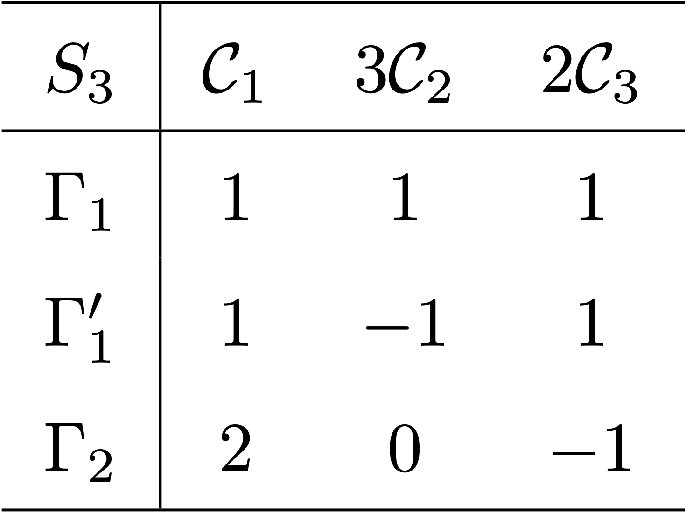
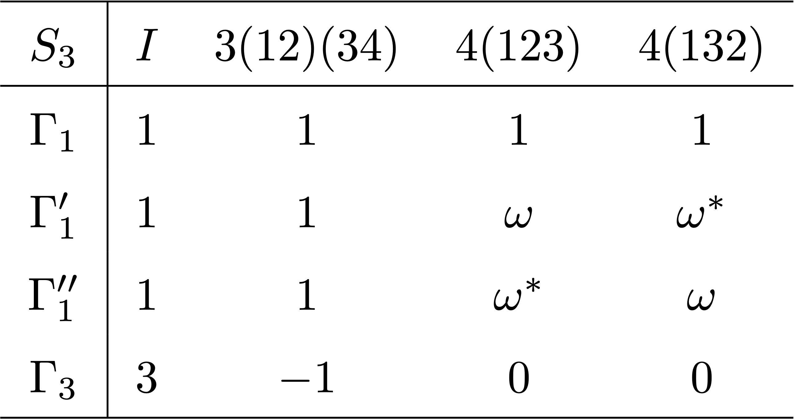

7 군의 지표
% %
%\[ \DeclarePairedDelimiters{\set}{\{}{\}} \DeclareMathOperator*{\argmax}{argmax} \]
7.1 지표 테이블
7.1.1 지표 테이블이란
지표 테이블은 군의 특성을 아는데 매우 중요하다. 이것을 어떻게 구성하는지 \(S_3\) 군에 대한 예를 통해 알아보기로 하자.
예제 7.1 (\(S_3=D_3\) 에 대한 켤레류) 순열군 \(S_3\) 는 \((1,\,2,\,3)\) 에 대한 순열군으로 \(D_3\) 와 같다. 다 쓰기 복잡하므로 각 원소에 이름을 아래와 같이 붙인다.
\[ S_3=\{E=i_{S_3},\, A=(12),\, B=(13),\, C=(23),\, D=(123),\, F=(132)\} \]
군의 켤레류가 군을 분할한다는 것을 이용하여 \(S_3\) 의 켤레류를 구해보자.
(\(1\)) 모든 \(g\in S_3\) 에 대해 \(gEg^{-1}=E\) 이므로 \(\{E\}\) 는 conjugacy class 이다. 즉 \([E]=\{E\}\) 이다.
(\(2\)) \(BAB^{-1}= C,\, CAC^{-1}=B,\, DAD^{-1}=C,\, FAF^{-1}=B\) 이므로 \([A]=\{A,\,B,\,C\}\) 이다.
(\(3\)) \(ADA^{-1}=F\) 이므로 \([D]=\{D,\,F\}\) 이다.
즉 \(3\) 개의 \(S_3\) 에 대해 켤레류가 존재한다. 이를 각각 \(\mathcal{C}_1,\, \mathcal{C}_2,\, \mathcal{C}_3\) 라고 하자. 또한 3개의 동등하지 않은 기약표현이 존재한다. \(S_3\) 에 대한 정칙표현은 \(6 \times 6\) 행렬이며 3개의 기약 표현에 대해 \(d_1^2+d_2^2+d_3^3 = 6\) 이어야 한다. 자명한 표현(예제 6.1) \(A_1\) 에 대해 \(d_1=1\) 이며 따라서 가능한 것은 \(d_2=1,\, d_3=2\) 뿐이다(명제 6.12). 이를 \(A_2,\, E\) 라고 하자.(1차원 기약표현은 \(A,\,B\), 2 차원 기약표현을 \(E\), 3 차원 기약표현을 \(T\) 로 표기하는 관례를 따른다.) 이 기약표현을 정리하면 아래와 같다.

지표 테이블은 첫번째 행에 클래스를, 첫번째 열에 기약표현을 나열하고 안을 지표값으로 채우는 방식과, 첫번째 행에 기약표현을, 첫번재 열에 클래스를 열하는 표기법이 있다. Zee (2016) 는 두번째 표기법을 사용하지만 여기서는 좀 더 많이 사용하는 첫번째 표기법을 사용하겠다.
지표 테이블의 첫번째 행은 켤레류를 나열한다. 켤레류 이름 앞에 각 켤레류의 원소의 개수를 쓰는 경우도 있다. 특정한 이름을 붙일 수도 있고 각 클래스의 대표 원소에 \([\;]\) 를 붙여 표기할 수도 있다. 좀 재멋대로다. 첫번째 행 첫번째 열에 군의 기호를 쓰기도 한다. \(D_3\) 의 경우 \(\mathcal{C}_1,\, 3\mathcal{C}_2,\, 2\mathcal{C}_3\) 가 된다. 지표 테이블의 첫번째 열은 각각의 기약표현에 대한 정보가 들어간다. 한줄로 아래와 같이 표현할 수도 있고, 이를 분할하여 여러 정보를 넣는 경우도 있다. 역시 제멋대로다. 그리고 나머지 행과 열은 각 기약표현의 켤레류의 지표를 나열한다. \(D_3\) 에 대한 지표 테이블은 아래와 같다.

위와 같은 지표 테이블에는 우리가 지금껏 알아보았던 여러가지 명제들이 사용된다. 여기서 한가지를 추가하도록 하자.
명제 7.1 \(c_{jkl}\) 은 식 4.6 에서 정의된 대로 \(K_jK_k=\sum_l c_{jkl}K_l\) 를 만족하는 상수 이다. 이 때 다음이 성립한다.
\[ |K_j|\chi^{(i)}(K_j) |K_k|\chi^{(i)}(K_k) = d_i \sum_l c_{jkl} |K_l| \chi^{(i)}(K_l) \tag{7.1}\]
(증명). 유한군 \(G\) 와 \(G\) 의 켤레류의 집합 \(\mathcal{K}_G=\{K_1,\ldots,\,\}\) 를 생각하자. \(G\) 에 대한 \(d_i\) 차원 기약표현 \(D^{(i)}\) 와 \(g\in G\) 에 대해 \(\overline{g} := D^{(i)}(g)\) 라고 하자. 그리고
\[ \overline{K}_k = \sum_{x\in K_k} D^{(i)}(x) \]
라고 하자. 그렇다면 모든 \(g\in G\) 에 대해 \(\overline{g}\overline{K}_k = \overline{K}_k \overline{g}\) 이며 슈어 보조정리(보조정리 6.2) 에 따라 \(\overline{K}_k\) 는 항등행렬의 스칼라배이다. \(\overline{K}_k = \eta_k I_{d_i}\) 라고 놓자.
이제 식 4.6 를 생각하자. \(K_jK_k = \sum_{l}c_{jkl}K_l\) 이므로
\[ \eta_j \eta_l = \sum_l c_{jkl}\eta_l \tag{7.2}\]
이 성립한다. \(\overline{K}_k = \eta_k I_{d_i}\) 이므로
\[ \operatorname{tr}(\overline{K}_k) = \eta_k d_i \]
이며
\[ \operatorname{tr}(\overline{K}_k) = \sum_{x\in K_i}\operatorname{tr}(D^{(i)}(x)) = |K_k| \chi^{(i)} (K_i) \]
이다. 따라서
\[ \eta_k = \dfrac{|K_k| \chi^{(i)}(K_i)}{d_i} \]
7.1.2 지표 테이블 구성 규칙
예제 10.3 의 경우 원소가 6개이고 켤레류가 3개 이므로 비교적 쉽게 지표 테이블을 구했다. 그러나 일반적으로는 쉽지 않으며 우리가 지금까지 알아본 것들을 이용하여 구해야 한다. 이제 여기에 중요한 것을 요약하고자 한다.
유한군 \(G\) 의 모든 동등하지 않은 기약표현 \(D^{(1)},\ldots,\,D^{(N_R)}\) 와 켤레류의 집합 \(\mathcal{K}_G =\{K_1,\ldots,\,K_{N_C}\}\) 를 생각하자. 기약표현 \(D^{(i)}\) 에 대한 지표를 \(\chi^{(i)}\) 라고 하고, \(D^{(i)}\) 의 차원을 \(d_i\) 라고 하자. \(D^{(i)}\) 와 동등한 유니터리 표현을 \(U^{(i)}\) 라고 하자. 이 때 다음이 성립한다.
(R1) 표현의 차원과 군의 크기
\[ \displaystyle\sum_{i} {d_i}^2 = |G|, \tag{7.3}\]
(R2) 지표와 기약 표현의 개수
\[ N_C=N_R \tag{7.4}\]
(R3) \(\boldsymbol{E=\{i_G\}}\) 와 지표
\[ \chi^{(i)}(E)=d_i \tag{7.5}\]
(R4) 1차원 표현의 지표
(R5) 위대한 직교 정리
\[ \displaystyle \sum_{g\in G} D^{(i)}(g^{-1})_{\nu \mu} D^{(j)}(g)_{\alpha\beta} = \dfrac{|G|}{d_i}\delta_{ij}\delta_{\mu\alpha}\delta_{\nu\delta}. \tag{7.6}\]
(R5-1)
사소한 표현 \(D^{(i)}(g)=1\) 과 사소하지 않은 기약표현 \(D^{(j)}(g)\) 에 대해 위대한 직교정리를 적용하면 \[ \displaystyle \sum_{g\in G} D^{(j)}(g)_{\alpha\beta} = 0 \tag{7.7}\]
(R6) 유니터리 표현에 대한 위대한 직교 정리
\[ \displaystyle \sum_{g\in G} {\left[U^{(i)}(g)\right]^\dagger} _{\mu \nu}U^{(j)}(g)_{\alpha\beta} = \dfrac{|G|}{d_i}\delta_{ij}\delta_{\mu\alpha}\delta_{\nu\delta}. \tag{7.8}\]
(R7) 지표에 대한 제 1 직교 정리
\[ \displaystyle \sum_{K_i\in \mathcal{K}_G} |K_i| \left(\chi^{(j)}(K_i)\right)^\ast\chi^{(k)}(K_i) = |G|\delta_{jk} \tag{7.9}\]
(R8) 지표에 대한 제 2 직교 정리
\[ \sum_k \left(\chi^{(k)}(K_i)\right)^\ast\chi^{(k)}(K_j) = \dfrac{|G|}{|K_i|} \delta_{K_i,\, K_j} \tag{7.10}\]
(R9) 지표 곱 규칙
\(K_jK_k =\sum_{l} c_{jkl} K_l\) 에 대해 \[ |K_j|\chi^{(i)}(K_j) |K_k|\chi^{(i)}(K_k) = d_i \sum_l c_{jkl} |K_l| \chi^{(i)}(K_l) \tag{7.11}\]
여기서 (R4) 는 다른 곳에서 명제로 명시적으로 밝히지 않았지만 유용하기 때문에 여기에 넣었다. 증명은 간단하다. \(D^{(i)}\) 가 1차원 표현일 이고 \(G\) 가 유한군이라면 \(g^{|G|}=1_G\) 이며, \(D^{(i)}(g^{|G|}) = (D^{(i)}(g))^{|G|}=1\) 이고 \(D^{(i)}(g) = \chi^{(i)}(g)\) 이기 때문이다.
7.1.3 간단한 군의 지표 테이블
여기서 \(n\) 차원 기약표현을 \(\Gamma_{n}\) 이라고 하자. \(n\) 차원 기약표현이 여러개 있을 경우 \(\Gamma_n',\, \Gamma_n'',\ldots\) 와 같이 표현하기로 하자.
예제 7.2 (\(Z_n\) 군 과 순환군) (정수에서의 \(\mathbb{Z}/n\mathbb{Z}\) 와는 다르다). \(\mathbb{C}\) 에서의 \(z^n=1\) 의 해의 집합 \(Z_n\) 은 곱셈 연산에 대해 군이다. \(z^n=1\) 의 해는 \(e^{2ki/n}\), \(k=1,\ldots,\, n\) 이며 \(\gcd(n,\,k_0)=1\) 인 \(k_0\in \mathbb{Z}_+\) 에 대해 \(Z_n = \langle e^{2 \pi k_0/n} \rangle\) 인 순환군이며 \(g^n=1\) 인 \(\langle g\rangle\) 과 동형이다. 순환군이므로 아벨군이다. \(n\) 이 소수일 경우는 모든 \(k=1,\ldots,\,n\) 이 \(Z_n\) 을 생성시키지만 \(n\) 이 소수가 아닐 경우는 그렇지 않다. \(Z_4\) 에 대한 지표 테이블은 아래와 같다.

예제 7.3 (\(A_3\) 군) \(e\) 를 항등원이라고 할 때 \(A_3 =\{e,\, (123), (132)\}\) 이며 순환군으로 \(A_3 \approx Z_3\) 이다. 식 7.3 에 의하면 \(c=1^2+1^2+1^2\) 이므로 3개의 1차원 기약표현이 존재하며 따라서 \(3\) 개의 지표가 존재한다. \(A_3\) 가 순환군이며, 따라서 아벨군이기 때문에 당연한 결과이다.

예제 7.4 (\(S_3\) 군) \(S_3=\{e,\, (12), (13), (23), (123), (132)\}\) 이며 \(\mathcal{C}_1=[e],\, \mathcal{C}_2=[(12)], \mathcal{C}_3=[(123)]\) 클래스를 가진다. \(|S_3|=6\) 이며 3 개의 class 를 가지므로 3개의 기약표현을 가지는데 6 을 세개의 제곱수의 합으로 표현하는 방법은 \(1^1+1^2+2^2\) 뿐이다. 즉 2 개의 1차원 기약표현과 1개의 2차원 기약표현을 가진다.
\(\mathcal{C}_1\) 클래스에 대항하는 지표는 각 기약표현의 차원이므로 \(1,\,1,\,2\) 이다. \(\Gamma_1\) 은 \(1\) trivial reprentation 이므로 해당 행은 모두 \(1\) 이다. 여기 까지만 하면 다음과 같다. 아직 정해지지 않은 부분은 미지수 \(a,\,b,\,c,\,d\) 로 채웠다.

지표에 대한 제 1 직교 정리를 통해
\[ \begin{aligned} \sum_{K\in \mathcal{K}_G} |K|\left(\chi^{(\Gamma'_1)}(K)\right)^\ast \chi^{(\Gamma'_1)}(K) &= 1+3|a|^2+2|b|^2=6, \\ \sum_{K\in \mathcal{K}_G} |K|\left(\chi^{(\Gamma_2)}(K)\right)^\ast \chi^{(\Gamma_2)}(K) &= 4+3|c|^2+2|d|^2=6, \\ \sum_{K\in \mathcal{K}_G} |K|\left(\chi^{(\Gamma_1)}(K)\right)^\ast \chi^{(\Gamma'_1)}(K) &= 1+3a+2b=0, \\ \sum_{K\in \mathcal{K}_G} |K|\left(\chi^{(\Gamma_1)}(K)\right)^\ast \chi^{(\Gamma_2)}(K) &= 2+3c+2d=0, \\ \sum_{K\in \mathcal{K}_G} |K|\left(\chi^{(\Gamma'_1)}(K)\right)^\ast \chi^{(\Gamma_2)}(K) &= 2+3a^\ast c+2b^\ast d=0, \\ \end{aligned} \]
을 얻는다. 또한 제 2 직교정리를 통해 \(\Gamma = \{\Gamma_1,\, \Gamma'_1,\, \Gamma_2\}\) 에 대해
\[ \begin{aligned} \sum_{\gamma \in \Gamma} \left(\chi^{(\gamma)} (\mathcal{C}_2)\right)^\ast \chi^{(\gamma)} (\mathcal{C}_2) &= 1+|a|^2+|c|^2=2, \\ \sum_{\gamma \in \Gamma} \left(\chi^{(\gamma)} (\mathcal{C}_3)\right)^\ast \chi^{(\gamma)} (\mathcal{C}_3) &= 1+|b|^2+|d|^2=3, \\ \sum_{\gamma \in \Gamma} \left(\chi^{(\gamma)} (\mathcal{C}_1)\right)^\ast \chi^{(\gamma)} (\mathcal{C}_2) &= 1+a+2c=0,\\ \sum_{\gamma \in \Gamma} \left(\chi^{(\gamma)} (\mathcal{C}_1)\right)^\ast \chi^{(\gamma)} (\mathcal{C}_3) &= 1+b +2d=0,\\ \sum_{\gamma \in \Gamma} \left(\chi^{(\gamma)} (\mathcal{C}_2)\right)^\ast \chi^{(\gamma)} (\mathcal{C}_3) &= 1+a^\ast b+c^\ast d=0, \end{aligned} \]
을 얻는다. \(\Gamma'_1\) 은 1차원 표현이므로 \(|a|^2=|b|^2=1\) 이다. 따라서 제 2 직교정리 결과의 첫번째 식에 의해 \(|c|^2=0,\, |d|^2=1\) 이며, 제 2 직교정리의 세번째 식에 의해 \(a=-1\), 제 1 직교정리의 네번째 식에 의해 \(d=-1\), 제 1 직교정리의 세번째 식에 의해 \(b=1\) 이다. 따라서 표 7.2 같은 표 7.6 를 얻었다.

7.1.4 지표 테이블에서 표현까지
- 크기가 작은 군의 경우 지표 테이블로부터 군의 표현을 얻을 수 있다.
Examples
예제 7.5 (\(S_3\) 의 유니타리 기약표현) \(S_3\) 에 대한 \(\Gamma_2\) 를 구해보자. 일단 \(2 \times 2\) 단위행렬 \(I_2\) 는 \(D^{(\Gamma_2)}(\mathcal{C}_1)=I_2\) 라는 것을 안다. 예제 7.4 에서 \(S_3\) 에 대한 기약표현은 1차원 2개와 2차원 1개임을 안다. 1차원 기약표현 \(\Gamma_1,\,\Gamma'_1\) 은 자명하므로 2차원 기약표현 \(\Gamma_2\) 를 구해보자. 우선 \((123)\) 과 \((132)\) 를 대각화 하는 기저로 2차원 유니타리 행렬로 표현하면
\[ D^{(\Gamma_2)}(123)= \begin{bmatrix} \omega & 0 \\ 0 & \omega^\ast\end{bmatrix},\qquad D^{(\Gamma_2)}(132) = \begin{bmatrix} \omega^\ast & 0 \\ 0 & \omega\end{bmatrix} \]
와 같다. \(\omega+\omega^\ast = -1\) 이므로 지표 테이블과 일치한다.
이제 \(D^{(\Gamma_2)}(12),\,D^{(\Gamma_2)}(13),\, D^{(\Gamma_2)}(23)\) 을 구해보자. \(D^{(\Gamma_2)}(12) = \begin{bmatrix} 0 & 1 \\ 1 & 0\end{bmatrix}\) 라고 놓으면(유니타리 조건, trace 조건 만족) \((123)(12) = (13),\, (132)(12) = (23)\) 으로부터 \(D^{(\Gamma_2)}(13),\, D^{(\Gamma_2)}(23)\) 를 다음과 같이 구할 수 있다.
\[ D^{(\Gamma_2)}(12) = \begin{bmatrix} 0 & 1 \\ 1 & 0\end{bmatrix},\quad D^{(\Gamma_2)}(13) = \begin{bmatrix} 0 & \omega \\ \omega^\ast & 0\end{bmatrix},\quad D^{(\Gamma_2)}(23) = \begin{bmatrix} 0 & \omega^\ast \\ \omega & 0\end{bmatrix} \]
우리는 \(S_n\) 이 \(n\times n\) 차원 표현을 갖는다는 것을 안다(예제 6.4). 이것은 정칙 표현이 아닌데 \(S_n\) 에 대한 정칙 표현은 \(n! \times n!\) 차원이다. \(S_3\) 의 경우 \(3\times 3\) 행렬 표현은 기약표현이 될 수 없으므로(R1) \(3\times 3\) 행렬표현은 기약표현이 아니다. 이 표현을 \(D^{(3)}\) 라고 하면 \(\mathcal{C}_1,\, 3\mathcal{C}_2,\,2\mathcal{C}_3\) 의 지표는 각각 \(3,\,1,\,0\) 이다. 따라서 \(D^{(3)} = D^{(\Gamma_1)}\otimes D^{(\Gamma_2)}\) 임을 알 수 있다.
아래 두 명제는 쉽게 보일 수 있다.
명제 7.2 군 \(G\) 의 동치류의 집합 \(\mathcal{K}_G\) 에 대해 \(K\in \mathcal{L}\) 일 때 \(\overline{K}= \{x^{-1}:x\in K\} \in \mathcal{K}_G\) 이며,
\[ \chi(\overline{K}) = (\chi(K))^\ast \]
이다.
명제 7.3 유한군 \(G\) 의 차수 \(n\) 인 성분 \(g\) 와 \(G\) 의 유한차원 복소 표현 \(D\) 에 대해 \(\det (D(g))\) 는 \(z^n=1\) 의 해 가운데 하나이다.
(증명). \(g^n=1_G\) 이므로 \(D(g)^n = I\) 이다. 따라서 \(\det(D(g))^n=1\) 이다. \(\square\)
예제 7.6 (정사면체의 불변군 \(T\) 와 \(A_4\)) 정사면체의 불변군 \(T\) 와 \(A_4\) 는 동형이다. 예제 4.16 에서 \(A_4\) 에는 4개의 켤레류가 존재한다는 것을 보였다. 4개의 기약 표현이 존재하며 군의 성분은 12 이므로 \(1+d_1^2+d_2^2+d_3^2=12\) 를 만족하는 \(d_1,\,d_2,\,d_3\) 는 \(1,\,1,\,3\) 뿐이다. 즉 \(A_4\) 는 3종류의 1차원 기약표현과 1종류의 3차원 기약표현이 존재한다. 지표에 관한 직교 정리들을 사용하면 아래와 같이 지표 테이블을 구할 수 있다. \(3(12)(34)\) 는 \((12)(34)\) 가 포함된 3개의 성분으로 된 켤레류를 의미한다. \(4(123)\) 은 \((123)\) 을 포함하는 \(4\) 개의 성분으로 이루어진 켤레류를 의미한다.

첫번째 행과 첫번째 열은 자동적으로 정해진다. 1차원 유니타리 기약표현은 절대값이 \(1\) 인 복소수임을 이용한다. 이를 이용하면 지표 테이블을 모두 구할 수 있다.
이제 3차원 표현을 구해보자 \(D^{(\Gamma_3)}(I)=I_3\) 이다. 켤레류 \(\{(12)(34),\, (13)(24),\, (14)(23)\}\) 은 서로 commute 함을 보일 수 있다. 또한 유니타리 행렬은 정규행렬이다. 따라서 각각의 3차원 표현은 동시에 대각화 가능하다. 각각을 \(R_1,\,R_2,\,R_3\) 라고 하면 각각은 trace 가 \(-1\) 인 대각행렬이다. 또한 이 행렬은 차수가 2인 행렬이므로(\(R_i^2=I_3\)), 행렬식의 값은 \(\pm 1\) 이다. \(R_i\) 의 대각성분을 각각 \(a,\,b,\,c\) 라고 하면 \(R_i^2=I_3\) 로부터 \(a^2=b^2=c^2=1\) 이므로 각 성분은 \(\pm 1\) 이며, \(\operatorname{tr}(R_i) = -1\) 이므로 가능한 셋은
\[ R_1= \begin{bmatrix} 1 & 0 & 0 \\ 0 & -1 & 0 \\ 0 & 0 & -1\end{bmatrix},\quad R_2 = \begin{bmatrix} -1 & 0 & 0 \\ 0 & 1 & 0 \\ 0 & 0 & -1\end{bmatrix},\quad R_3=\begin{bmatrix} -1 & 0 & 0 \\ 0 & -1 & 0 \\ 0 & 0 & 1\end{bmatrix} \]
이다.
이제 \(M=D^{(\Gamma_3)}(123)\) 을 구해보자. 우리는
\[ \begin{aligned} (123)(12)(34)(123)^{-1} &= (14)(23), \\[0.3em] (123)(13)(24)(123)^{-1} &= (12)(34), \\[0.3em] (123)(14)(23)(123)^{-1} &= (13)(24). \end{aligned} \]
임을 안다. 즉 \(MR_1M^{-1}=R_3,\, MR_2M^{-1}=R_1,\, MR_3M^{-1}M=R_1\) 이다. 또한 \(M^3=I\) 이다.@exr-conjugation_of_digonal_matrix 로 부터 \(M\) 은 permutation 이며 이를 이용하여 풀면
\[ D^{(\Gamma_3)}(123)=\begin{bmatrix} 0 & 0 & 1 \\ 1 & 0 & 0 \\ 0 & 1 & 0\end{bmatrix} \]
임을 안다. \((132)=(123)^{-1}\) 이므로
\[ D^{(\Gamma_3)}(132)=\begin{bmatrix} 0 & 1 & 0 \\ 0 & 0 & 1 \\ 1 & 0 & 0\end{bmatrix} \]
이다. 나머지 성분에 대한 행렬 표현은 지금까지 구했던 것들의 곱으로 얻을 수 있다.
접시법
- Zee (2016) 에는 The tray method 라고 소개되지만 실제로 불리는 이름은 아닌것 같다.
\(A_4\) 군은 \((12),\, (13),\, (14),\, (23),\, (24),\, (34)\) 호환들의 짝수개의 곱으로 이루어져 있다.
연습문제
연습문제 7.1 \(D\) 가 \(n\) 차원 대각행렬이고 \(M\) 가 \(n\) 차원 가역행렬일 때 \(MDM^{-1}\) 역시 대각행렬이라면 \(Me_i=e_j\) 임을 보여라.
(해답). \(D\) 와 \(D'\) 의 \(i\) 번째 대각성분을 \(d_i,\,d'_i\) 라고 하자. \(MDM^{-1}e_i = D'_ie_i = d'_i e_i\) 이며 양 변의 앞에 \(M^{-1}\) 을 곱해주면 \(D(M^{-1}e_i) = d'_i (M^{-1}e_i)\) 이다. 즉 \(M^{-1}e_i\) 는 \(d'_i\) 의 고유값을 갖는 \(D\) 의 고유벡터이며 따라서 어떤 \(j\) 에 대해 \(e_j = M^{-1}e_i\) 이다. \(e_i = Me_j\) 이므로 \(D\) 와 \(D'\) 의 대각성분은 순서를 무시했을 때 동일하다.